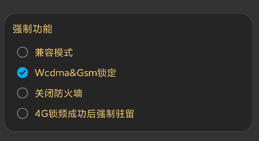
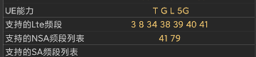
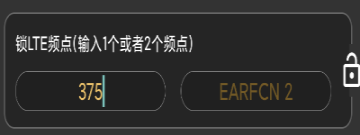

常见问题（Q&A）
一、设备要求
1、系统至少在Android 5.0以上。锁网需要ROOT，不限制芯片类型。
锁BAND，锁小区，锁频点均需要高通晓龙芯片。MTK，海思，以及 Exynos 芯片均不支持。
高通845芯片之前不支持卡2锁定，所有的操作都会影响卡1，从845之后的芯片将更好的支持双卡锁定
2、锁GSM和WCDMA功能 需要在系统设置中打开开关。等网络处于GSM或者WCDMA的时候将自动显示锁频信息
3、信令和更多的参数信息需要高通芯片，且ROOT后才能正常输出
4、华为及其他芯片可以使用测试功能，不影响配置测试计划和任务执行功能，文件格式可以选择CSV
5、部分手机比如S7,NOTE5,NOTE7等早期芯片存在锁band回落到2G,但是锁频点正常的现象，这个现象在MI
9PRO等新设备上都正常。
建议锁band无效的设备，重启，然后设备会进行BAND扫描

二、支持哪些网络锁定
目前支持GSM锁频段；WCDMA锁频段，频点；LTE锁频段，PCI，频点；NR锁频段，PCI，频点。
三、如何知道目前设备支持哪些LTE频段
在“设备”页面可以看到支持的列表，勾选后选择右边的锁。

四、列表显示正在加载怎么办
确认是否是高通芯片，且已经ROOT。如果都已经满足可能是新手机需要适配
五、不知道锁哪些频段怎么办
首先在设备页面找到支持的LTE频段列表，然后分别进行尝试。如果列表为空可自行百度当前的运营商支持哪些频段。
然后在频段列表里面勾选。不要一次勾选多个，需要一个个的尝试。锁网频段成功后，可以在LTE页面里面看到对应的频点，
记住这些频点后期如果发现那个频点好，可以直接在锁频点哪里输入频点号，比如375等。频点最多可以一次输入2个。

六、普通会员能干什么
普通会员可以顺利使用锁频，锁网功能，没有广告打扰